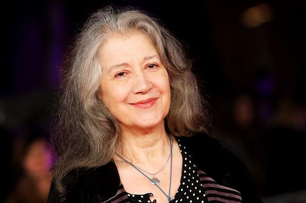

Lang Lang
Lang Lang (Chinese: 郎朗; pinyin: Láng Lǎng; born 14 June 1982) is a Chinese concert pianist who has performed with leading orchestras in China, the United States, Europe, and elsewhere. Active since the 1990s, he was the first Chinese pianist to be engaged by the Berlin Philharmonic, the Vienna Philharmonic and some top American orchestras.[1] A Chicago Tribune music critic called him "the biggest, most exciting young keyboard talent I have encountered in many a year of attending piano recitals".[2]
Stevie Wonder

Stevland Hardaway Morris (né Judkins; born May 13, 1950), better known by his stage name Stevie Wonder, is an American singer, songwriter, musician and record producer. A prominent figure in popular music, he is one of the most successful songwriters and musicians in the history of music.[1] Through his heavy use of electronic instruments and innovative sounds, Wonder became a pioneer and influence to musicians of various genres including pop, rhythm and blues, soul, funk and rock.[2]
Martha Argerich
Early life and education Argerich aged 21, in 1962 Argerich was born in Buenos Aires, Argentina.[1] Her paternal ancestors were Spanish Catalans based in Buenos Aires since the 18th century. Her maternal grandparents were Jewish immigrants from the Russian Empire, who settled in Colonia Villa Clara in the Entre Ríos province—one of the colonies established by Baron de Hirsch and the Jewish Colonization Association.[2][3] The provenance of the name Argerich is Catalonia, Spain. She started playing the piano at age three. At the age of five, she moved to teacher Vincenzo Scaramuzza, who stressed to her the importance of lyricism and feeling. Argerich gave her debut concert in 1949 at the age of eight.
Next can be you
so,what are you waiting for ??